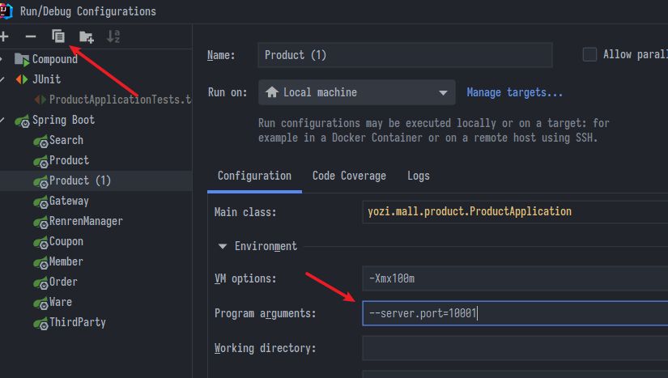
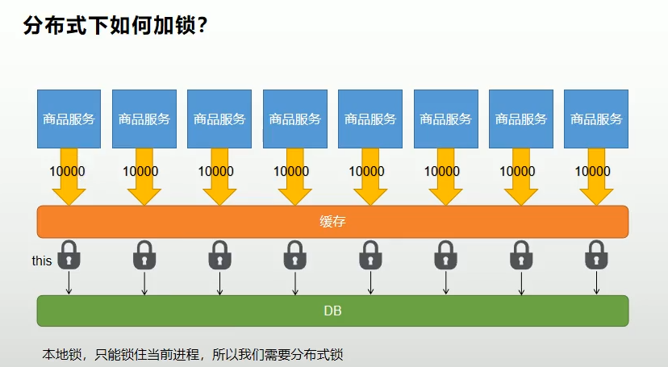

Redis緩存與分佈式鎖
SpringBoot微服務項目筆記-11
緩存
- 誰適合進緩存?
- 讀多寫少
- 即時性、一致性要求不高的
- 例如: 物流資訊、排行榜
實現
-
請求來了，緩存中是否已有資料?
- 無，去DB拿一份給他，並且存到緩存中
- 有，直接從緩存拿給他
-
本地緩存: 最簡單實現就是寫一個Map，把東西存裡面。然而在分布式會有問題
- 負載均衡: 每次輪到可能每個分散的機站都要去DB取一份資料
- 資料一致性: 某處更新了，其他處已經緩存中的不會更新
-
於是就會用到Redis這種noSQL
Spring Redis
- 引包:
spring-boot-starter-data-redis application.properties設定端口與密碼(如果有)
spring.redis.host=localhost
spring.redis.port=6379
- 造一個
StringRedisTemplate - 用
.opsForXXX()方法造出操作子，XXX是要存的value類型 - 拿造出的操作子開始set、get
@Autowired
StringRedisTemplate stringRedisTemplate;
@Test
void test1() {
ValueOperations<String, String> ops = stringRedisTemplate.opsForValue();
ops.set("hello", "world_" + UUID.randomUUID());
System.out.println("ops.get(\"hello\") = " + ops.get("hello"));
}
- 推薦使用這個小軟體來查看管理Redis
https://github.com/qishibo/AnotherRedisDesktopManager/releases
優化實作
- 回到之前的CategoryServiceImpl.java
// 從redis獲取所有分類
@Override
public Map<String, List<Catalogs2Vo>> getCatalogJson() {
// 先去緩存拿
ValueOperations<String, String> ops = stringRedisTemplate.opsForValue();
String catalogJson = ops.get("catalogJson");
if (StringUtils.isBlank(catalogJson)) {
// 緩存沒資料，去DB拿，且存到緩存中
Map<String, List<Catalogs2Vo>> catalogJsonFromDb = this.getCatalogJsonFromDb();
// 為了方便統一交流，redis放的都是JSON序列化後的
String s = JSON.toJSONString(catalogJsonFromDb);
// 設定過期時間
ops.set("catalogJson", s, 10, TimeUnit.MINUTES);
return catalogJsonFromDb;
}
// 把取出的JSONstring反序列化，使用TypeReference指名泛型
Map<String, List<Catalogs2Vo>> stringListMap = JSON.parseObject(catalogJson, new TypeReference<Map<String,
List<Catalogs2Vo>>>() {
});
return stringListMap;
}
lettuce舊版BUG
我是沒遇到，不過還是記一下，說不定哪時真遇到了
- 報錯: OutOfDirectMemoryError 堆外記憶體溢出
- 因為springboot2.0後使用lettuce操作redis的用戶端
- lettuce使用netty通信(netty扮演類似tomcat的角色)
- lettuce的bug導致netty堆外記憶體溢出(他有一個計數器只計吃不計清，所以很快就會假象的顯示用完記憶體)
- 解法:
- 升級lettuce
- 切換使用jedis
- 到pom文件依賴用
<exclusion>排除lettuce並引入jedis
- 到pom文件依賴用
- lettuce跟jedis都是java底層操作redis的封裝，而spring的RedisTemplate又是他們兩者的再封裝，所以切換的時候底層的連接工廠都可以認得
緩存風險
- 大併發之下緩存會有這些風險
緩存穿透
- 有人查不存在的數據，套用基本規則先在緩存中看看，沒東西
- 於是就去DB查，然後DB查了結果也是Null(因為是不存在的數據)，由於沒有結果所以回傳時也沒東西放到緩存
- 下次再看緩存還是沒東西，於是又去DB查…loop

-
相當於緩存失去意義，被穿透了，查的就是DB
-
解法: 把null結果也存在緩存中，但設定短暫過期時間
- 但如果他是隨機產生key那就可能要使用布隆過濾器
- 布隆過濾器就是判斷key是否有效的工具，有一定誤判
緩存雪崩
- 所有緩存的key設定了相同的過期時間，當緩存全部一起過期就會全部去DB查，DB又被玩壞了
- 解法: 設定隨機過期時間，分散壓力
緩存擊穿
- 擊穿，顧名思義發生在一個點被捅破，例如某個熱點key被高頻訪問，當這個key失效且又剛好處於高峰期，請求全部被放去查DB，DB又被玩壞了
- 解法: 給DB加鎖，大併發只給有鎖的一人查，他查完資料就同步放到緩存了，其他人也不用排隊，直接去緩存拿吧
- 很像小時候考完試大家衝去辦公室找老師對答案，但老師只把答案卷給小老師一個人，小老師拿到答案卷再去教室黑板公布給同學。就不會一群人把老師辦公室擠爆
本地鎖
- spring預設是單例所以可以用this當鎖
- 注意查庫後放到緩存的動作也要鎖到
- 否則查完才正要放進緩存，下一個拿到鎖的已經進來了，二號的哥們做雙重判斷看緩存肯定還是空的，他又會多查一次DB
- 因為I/O寫入緩存的延遲時間必定大於加鎖解鎖的延遲
// 從DB獲取所有分類，且二、三級分類以封裝好
public Map<String, List<Catalogs2Vo>> getCatalogJsonFromDb() {
// spring預設是單例所以可以用this
synchronized (this) {
// 雙重檢驗，拿到鎖也不急著查DB，先看看緩存
ValueOperations<String, String> ops = stringRedisTemplate.opsForValue();
String catalogJson = ops.get("catalogJson");
if (!StringUtils.isBlank(catalogJson)) {
// 緩存有了，拿緩存的就滾吧
return JSON.parseObject(catalogJson,
new TypeReference<Map<String,
List<Catalogs2Vo>>>() {
});
}
// 查庫，放緩存的動作省略
}
分布式鎖
- 本地鎖的問題在於有幾個服務就有幾個容器，就有幾個單例，就有幾把鎖
- 模擬啟動多個服務，複製然後指定不同的連接埠
- 注意是兩個
-
- 注意是兩個

- 本地鎖只能鎖住自己，鎖不住其他服務去DB拿東西(乍看問題不大，除非服務啟動超多個那才又會造成問題)

手動實現
- 使用redis的setNX (SET if Not eXists)可以讓坑只被一人佔
- 在spring中是
setIfAbsent() - 佔完辦好事出去記得要把鎖給刪了，例如:
// 分布式鎖
public Map<String, List<Catalogs2Vo>> getCatalogJsonFromRedisLock() {
Boolean lock = stringRedisTemplate.opsForValue().setIfAbsent("lock", "123", 30, TimeUnit.SECONDS);
if (lock) {
// 能放到值，相當於搶到鎖了，執行業務，並且走之前要刪掉值
// stringRedisTemplate.expire("lock",30,TimeUnit.SECONDS); 不保險，沒原子性，如果在這之前斷電就GG
stringRedisTemplate.delete("lock");
return getCatalogJsonFromDb();
} else {
// 沒搶到，等會重試
return getCatalogJsonFromRedisLock(); // 自旋
// 等待一段時間之類的操作
}
}
-
.expire()方法可以給指定的key設定過期時間，但不保險，最好還是在放值的同時就設定過期時間 -
然而又有問題，比如A業務執行了40秒，結果30秒一到鎖開了，下一個人B也跑進來佔坑，B才剛放了key，A才終於執行到delete，結果把B的key刪了
- 以此類推，會刪到別人的key，導致鎖實質無效
-
解法可以嘗試給key的內容做驗證，例如A放的key內容是A產生的uuid，要比對一下是A的才能刪，然而比對要寫兩行以上又會有原子性問題
-
就要使用LUA腳本保證刪除也是原子性操作
// 分布式鎖
public Map<String, List<Catalogs2Vo>> getCatalogJsonFromRedisLock() {
String uuid = UUID.randomUUID().toString();
Boolean lock = stringRedisTemplate.opsForValue().setIfAbsent("lock", uuid, 30, TimeUnit.SECONDS);
if (lock) {
// 能放到值，相當於搶到鎖了，執行業務，並且走之前要刪掉值
try {
return getCatalogJsonFromDb();
} finally {
// 刪除鎖的lua腳本，不用太在意複製貼上就好
String script = "if redis.call('get', KEYS[1]) == ARGV[1] then return redis.call('del', KEYS[1]) else" +
" " +
"return 0 end";
stringRedisTemplate.execute(new DefaultRedisScript<Long>(script, Long.class), Arrays.asList("lock"),
uuid);
}
} else {
// 沒搶到，等會重試
// 等待一段時間
try {
Thread.sleep(2000);
} catch (InterruptedException e) {
e.printStackTrace();
}
return getCatalogJsonFromRedisLock(); // 自旋
}
}
小結
- 設置鎖沒同步指定過期時間: 可能造成死鎖
- 不用UUID做Token: 鎖可能被別人誤刪
- 刪除鎖前花兩行比對UUID: 可能自己出意外導致沒人能刪，造成死鎖
- 重點就是設置鎖、刪除鎖的時候都必須保證原子性，才能確實達成分布式鎖的功能
- 然而這樣用太麻煩了，所以肯定有人封裝好了框架，就是redisson
…下節繼續
上次修改於 2022-01-28